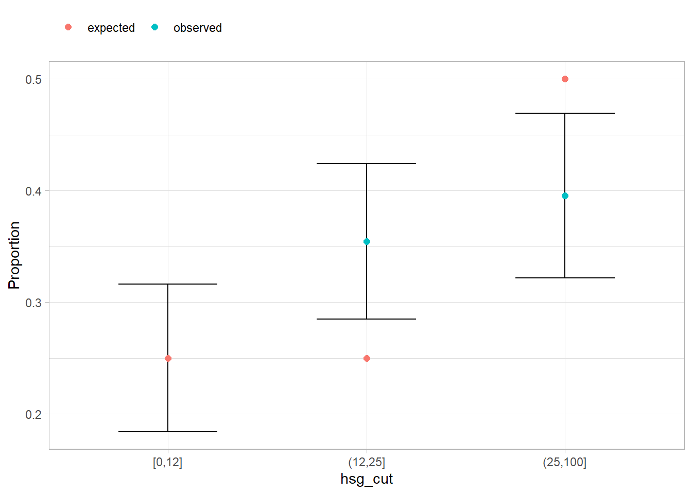

library(tidyverse)
library(scales)
library(janitor)
library(survey)
library(srvyr)
library(gtsummary)6 Statistical Testing
6.1 T-Test
Use t-tests to compare two proportions or means. The difference between t-tests with non-survey data and survey data is based on the underlying variance estimation difference. survey::svyttest() handles sample weights.
Test whether api00 differs from 600.
svyttest(
formula = api00 - 600 ~ 0,
design = apisrs_des,
na.rm = TRUE
)
Design-based one-sample t-test
data: api00 - 600 ~ 0
t = 6.1175, df = 198, p-value = 4.992e-09
alternative hypothesis: true mean is not equal to 0
95 percent confidence interval:
38.34439 74.82561
sample estimates:
mean
56.585 Test whether growth > 0 on average.
svyttest(
formula = (growth > 0) ~ 0,
design = apisrs_des,
na.rm = TRUE
)
Design-based one-sample t-test
data: (growth > 0) ~ 0
t = 39.781, df = 198, p-value < 2.2e-16
alternative hypothesis: true mean is not equal to 0
95 percent confidence interval:
0.841129 0.928871
sample estimates:
mean
0.885 Test whether growth is higher for high school than for others.
svyttest(
growth ~ (stype == "H"),
design = apisrs_des
)
Design-based t-test
data: growth ~ (stype == "H")
t = -5.5339, df = 198, p-value = 9.845e-08
alternative hypothesis: true difference in mean is not equal to 0
95 percent confidence interval:
-29.73118 -14.10882
sample estimates:
difference in mean
-21.92 6.2 Chi-Squared Test
Does meals_cut distribution match hypothesized population [.25, .25, .5]?
gof <- svygofchisq(
formula = ~meals_cut,
p = c(.25, .25, .5),
design = apistrat_des,
na.rm = TRUE
)
gof
Design-based chi-squared test for given probabilities
data: ~meals_cut
X-squared = 1100.4, scale = 31.6017, df = 1.6449, p-value = 1.438e-08Show the code
apistrat_des |>
summarize(
.by = hsg_cut,
observed = survey_mean(vartype = "ci")
) |>
mutate(expected = c(.25, .25, .5)) |>
pivot_longer(c(observed, expected), values_to = "Proportion") |>
ggplot(aes(x = hsg_cut)) +
geom_errorbar(aes(ymin = observed_low, ymax = observed_upp), width = .5) +
geom_point(aes(y = Proportion, color = name), size = 2) +
theme(legend.position = "top", legend.justification = "left") +
labs(color = NULL)
Is meals_cut distribution related to hsg_cut?
svychisq(
formula = ~ meals_cut + hsg_cut,
design = apistrat_des,
statistic = "Wald",
na.rm = TRUE
)
Design-based Wald test of association
data: NextMethod()
F = 9.4761, ndf = 4, ddf = 197, p-value = 5.01e-07gtsummary does not have a cross table function, but you can make your own.
apistrat_des |>
drop_na(meals_cut, hsg_cut) |>
group_by(meals_cut, hsg_cut) |>
summarize(Obs = round(survey_mean(vartype = "ci"), 3), .groups = "drop") |>
mutate(prop = glue::glue("{Obs} ({Obs_low}, {Obs_upp})")) |>
pivot_wider(id_cols = meals_cut, names_from = hsg_cut, values_from = prop) |>
gt::gt(rowname_col = "Meals") |>
gt::tab_stubhead("High School Grad")| meals_cut | [0,12] | (12,25] | (25,100] |
|---|---|---|---|
| [0,12] | 0.797 (0.642, 0.952) | 0.129 (0.007, 0.252) | 0.073 (-0.035, 0.182) |
| (12,25] | 0.35 (0.175, 0.526) | 0.453 (0.278, 0.628) | 0.197 (0.06, 0.333) |
| (25,100] | 0.127 (0.064, 0.189) | 0.374 (0.288, 0.46) | 0.499 (0.409, 0.59) |
Is the distribution of meals_cut the same for each level of hsg_cut?
svychisq(
formula = ~ meals_cut + hsg_cut,
design = apistrat_des,
statistic = "Chisq",
na.rm = TRUE
)
Pearson's X^2: Rao & Scott adjustment
data: NextMethod()
X-squared = 59.835, df = 4, p-value = 1.63e-11